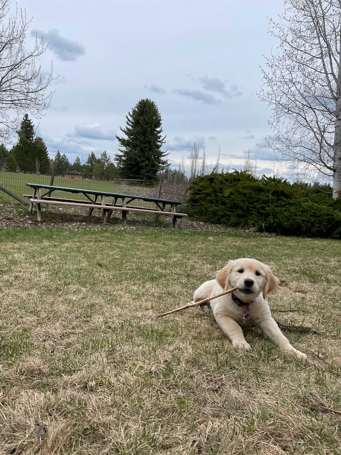

Golden Fall Remington (aka Remy)
Remy our stud muffin. We absolutely love this guy. He's definitely been the best male we have ever owned. He's great with our other pups, as long as they don't steal his tennis ball, and our human kids. Lol He's quite manly and competitive. He loves to swim and show off. He's also quite protective of his pack. He's such a great guy. We love our Remington.


Golden Spring Viola (aka Viola)
Viola is our sweet one year old! She's an absolute bundle of energy, who loves to run and play any chance she gets! She's incredibly athletic and is so quick on her feet, which is so fun to watch. She's so trainable and has a desire to please that helps spur on her obedience. I am so excited to see how she's going to be as an adult. She's a classic field golden with a beautiful red coat.
Stewart's Golden Spring Xylophone (aka Xyla)
My Xyla girl! I am pretty sure everyone needs a 'Xyla' in their life. She is probably one of the happiest dogs I've ever gotten to know. She senses when you're sad and wants to make things better. She's quite competitive and loves to play fetch with Remy. She looks out for the little pups. She doesn't ever want to get in a fight. She loves people and holding her own leash. She is such a great friend and quite cute too!


Stewarts Golden Winter Harper (aka Harper)
Harper is a joyful eight month old. She loves pleasing people more than anything. She loves playing fetch and loves playing with all of her doggy friends. She is great with kiddos and loves running around, especially with her best friend Viola.
Retired Dogs
Banja
Levi
Mandi
Uke

Parents: Uke and Levi

Parents: Mandi and Levi


Parents: Xyla and Remy


Parents: Mandi and Remy


About Us
Let us introduce ourselves! My name is Megyn and my moms name is Kayla and Goldensonthefarm is primarily run by us. Our first litter originated in 2010 with original parents Banja and Cowboy, and have loved goldens ever since. Our favorite part about running this business is being able to grow such great relationships with the people who want to bring a furry addition to their family. For inquiries or more information, email us at goldensonthefarm@gmail.com or text us at 509-111-2222.